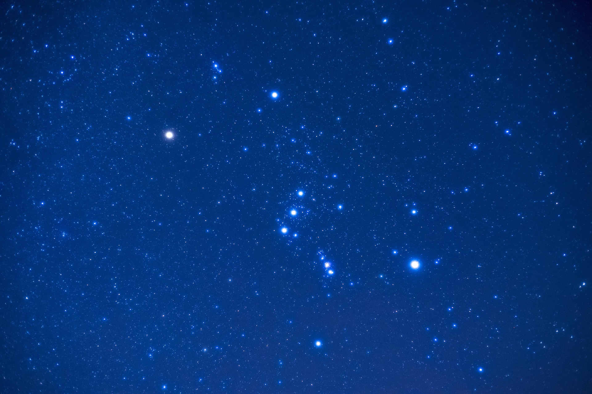
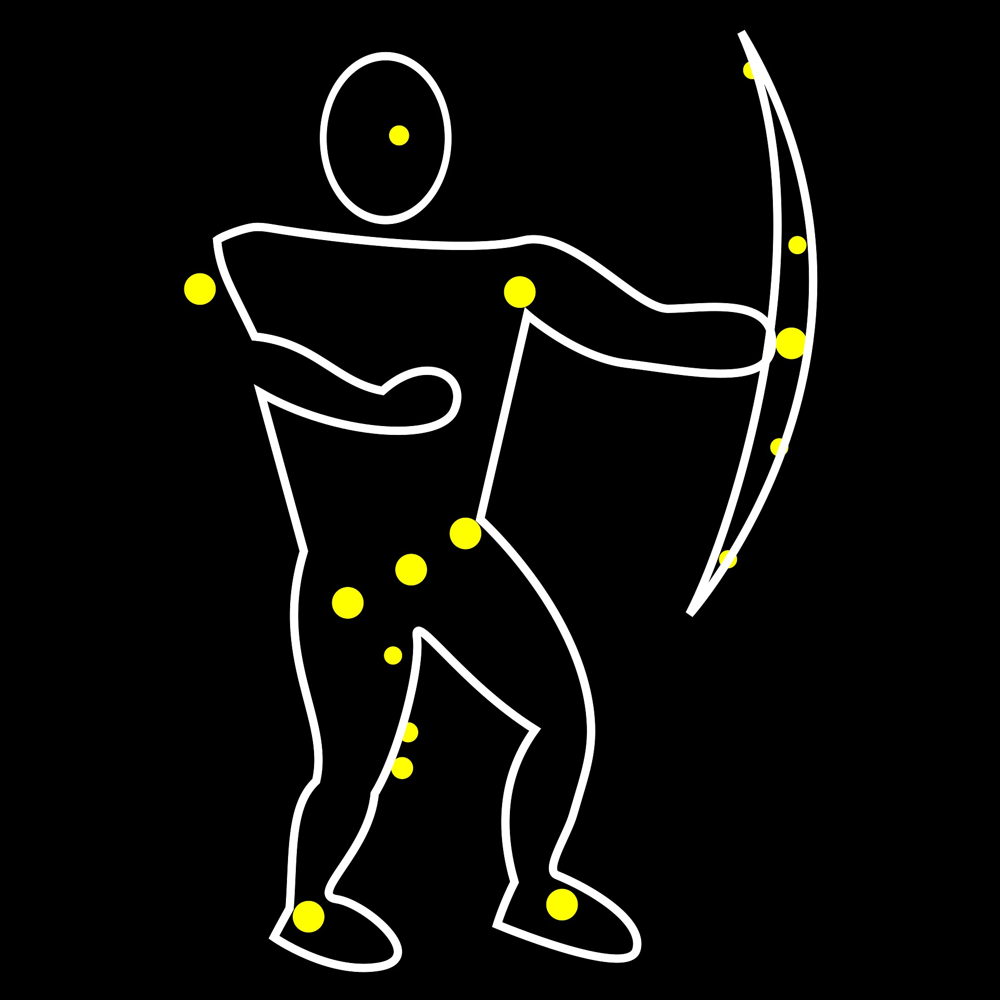

Galeria del Firmamento




Estado de la Observación en Tiempo Real
Consulta las condiciones meteorológicas inmediatas, la cobertura de nubes y el estado de la Luna para planificar tu salida nocturna:
Fase Lunar Actual
Inscripción a Quedadas Astronómicas y Alertas de Cielo Limpio
Apúntate para participar en nuestras salidas colectivas o para recibir avisos urgentes cuando se prevean condiciones excepcionales de observación (cielo de transparencia máxima o lluvias de estrellas):
Mapas Satelitales de Contaminación Lumínica
Accede a herramientas cartográficas científicas para comprobar la calidad del cielo y el índice de oscuridad en Rebolledo de la Torre y el espacio natural de Las Loras:
Coordenadas GPS y Geolocalización de Puntos de Observación
- Punto 1: Entorno del Castillo de los Velasco: Latitud: 42.6917° N | Longitud: 4.2255° W | Altitud: 960 m
- Punto 2: Mirador Alto de la Lora (Acceso Norte): Latitud: 42.7042° N | Longitud: 4.2110° W | Altitud: 1.045 m
- Punto 3: Base de la Iglesia de San Julián y Santa Basilisa: Latitud: 42.6919° N | Longitud: 4.2263° W | Altitud: 955 m
Calidad y Condiciones del Cielo Nocturno
Rebolledo de la Torre goza de una ubicación privilegiada para la práctica de la astronomía. Al encontrarse resguardado por las formaciones geológicas de Las Loras y alejado de grandes urbes industriales, el municipio presenta niveles muy bajos de contaminación lumínica, ofreciendo cielos limpios de clase Bortle idóneos tanto para la observación visual como para la astrofotografía de cielo profundo.
Qué observar en el Firmamento de Rebolledo
- Primavera
- Galaxias lejanas en Virgo y Leo.
- Verano
- Brazo de la Vía Láctea, el Triángulo de Verano y las Perseidas.
- Otoño
- Galaxia de Andrómeda (M31) y el cúmulo de las Pléyades.
- Invierno
- Constelación de Orión y la Gran Nebulosa (M42).
Recomendaciones para la Actividad
- Consultar previamente la fase lunar.
- Llevar ropa de abrigo técnica durante todo el año debido a la altitud de Las Loras.
- Utilizar linternas de luz roja.